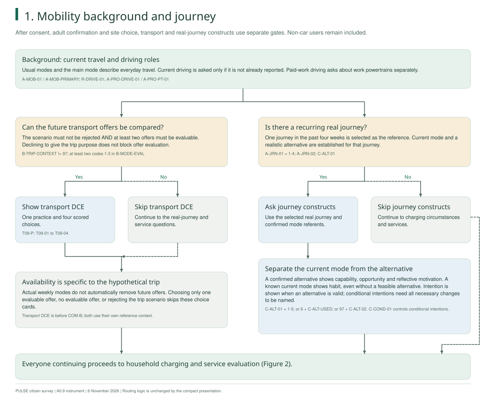
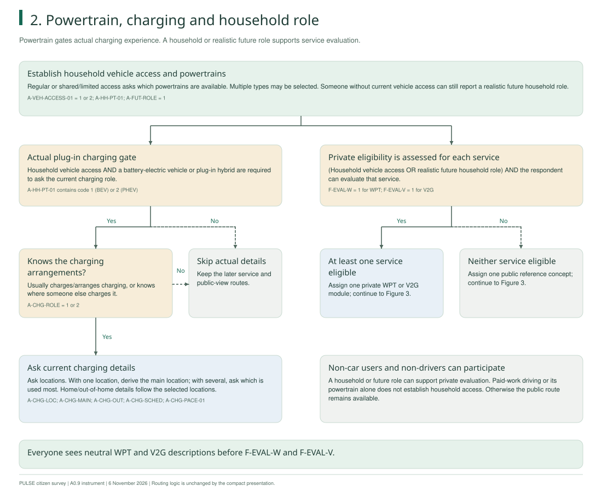
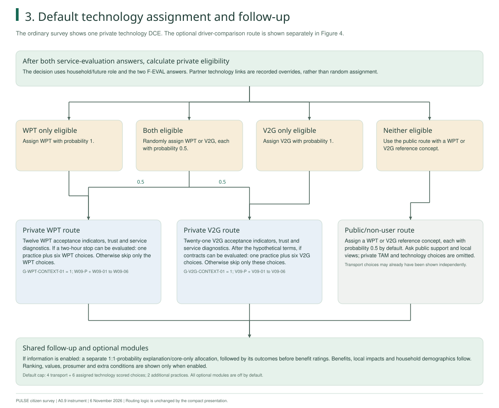
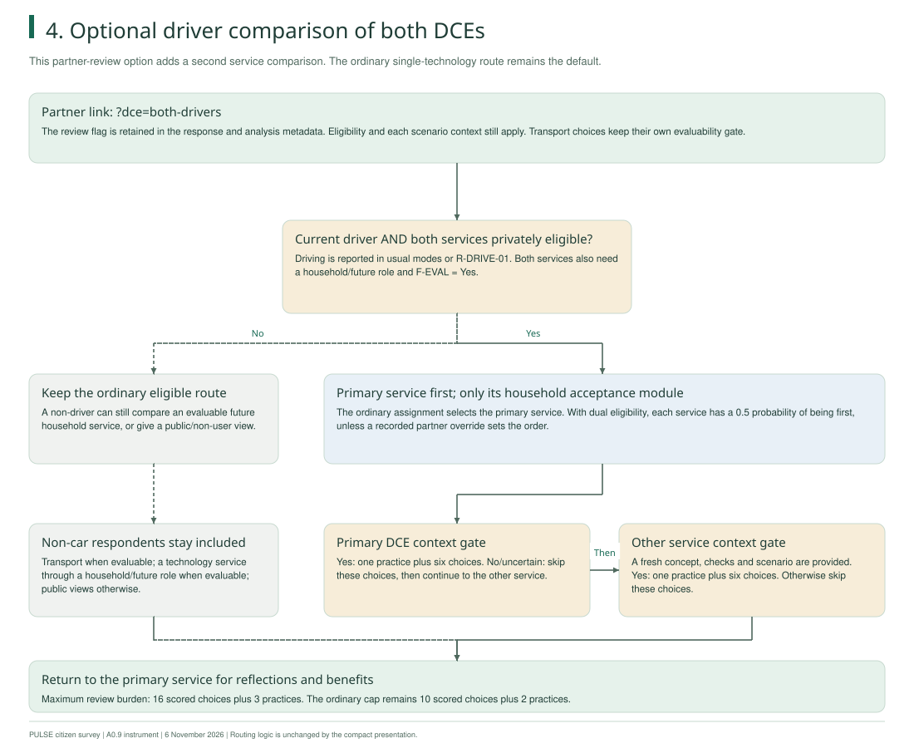

Partner reference · 6 November 2026
How the survey assigns each path
Current powertrain controls the questions about actual charging. Household or future roles and the ability to evaluate each service determine the private WPT, private V2G or public route.
Mobility and technology are separate decisions. Someone who does not own or drive a car can still compare a future trip, consider a future household service, or give a public/non-user view.
The compact layout changes the presentation and page grouping. Question wording, response codes, eligibility, assignment probabilities and choice profiles stay the same.
1. Mobility background and real journey

2. Current charging and household or future role

3. Default: one service route, then shared follow-up

4. Optional partner test: both DCEs for drivers
Open the driver-comparison review →

The current decision rules
| Answers | Effect on the path |
|---|---|
| Usual driving and paid-work driving | Reported car driving removes the duplicate current-driving question. Paid-work driving asks its own powertrain question; it does not establish household access. |
| Household vehicle access | Regular or shared/limited access asks household powertrains. Multiple powertrains can be selected. |
| Household BEV or PHEV access | Ask the current charging role. Actual charging details require that the respondent charges it, arranges charging, or knows where it is charged. |
| Future trip and evaluable offers | At least two of private EV, shared EV and accessible public transport must be evaluable. Rejecting the scenario skips the transport DCE. A trip-purpose refusal alone does not skip it. |
| Recurring real journey | A recurring journey enables the relevant mobility constructs. No recurring journey skips those constructs while keeping the service paths available. |
| Alternative mode and current mode | Capability, opportunity and reflective motivation refer to the confirmed alternative; habit refers to the current journey mode. Conditional intentions require all necessary changes to be named. |
| Household or realistic future role + service evaluation | Each service is privately eligible only if that role exists and its F-EVAL answer is Yes. Everyone sees both neutral concept descriptions before these answers. |
| One, both or neither service eligible | One eligible service assigns that one. Both eligible gives each a 0.5 probability. Neither eligible gives a public reference concept, also 0.5/0.5 by default. |
| WPT/V2G scenario context | Yes shows one practice and six scored choices. No, uncertainty or refusal skips only that technology DCE; acceptance and downstream questions remain. |
| Driver comparison review | The separate partner link adds the other DCE only for current drivers who are privately eligible for both services. Each scenario remains independently skippable. The original assignment selects which is first; only that service has the acceptance battery. |
| Optional modules | Information, ranking, values, prosumer, convenience and extra conditions are off by default. When information is enabled, allocation is a separate seeded 1:1-probability draw. |
The selected test site identifies the questionnaire context, not verified residence. Parking access, affordability and demographics describe circumstances; they do not set the private technology assignment. Partner technology links are recorded overrides rather than random allocations.